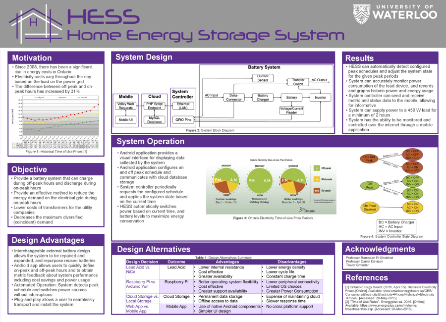
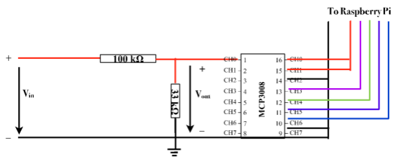
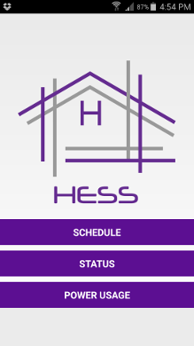
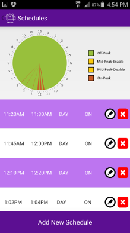
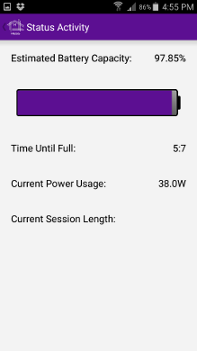
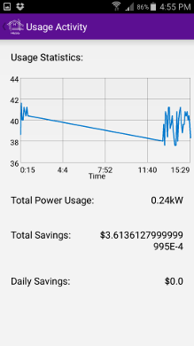

Objective
For our Fourth Year Design Project, our team wanted to try and solve a problem and build a practical solution. Since 2008, there has been a significant rise in energy costs in Ontario. Electricity costs vary throughout the day based on the load on the power grid. As a result, hydro companies have provided guidelines on the cost of electricity at different points in the day, which vary between on and off peak hours.
Given the problem of increasing energy demand and costs, the Home Energy Storage System (HESS) sets out to provide a solution by means of hardware and software. The objective is to provide a storage system that can charge during off-peak hours and discharge during on-peak hours. This storage system aims to provide an effective method to reduce the energy demand on the electrical grid during on-peak hours. This will reduce the costs of transformers for the utility companies and decrease the maximum diversified (coincident) demand.
Battery and Charging System
One of the core systems of HESS is the battery and its charging system. This system is responsible for obtaining and storing power during off-peak hours and distributing it to the load during on-peak hours. As a typical outlet supplies AC power, a charging system comprising of a rectifier and inverter is required in order to charge the battery and supply energy to devices during off-peak hours. The battery itself must be able to power a load for at least one on-peak period.
It was found that the lead-acid battery type would be the most suitable for the project. Lead-Acid batteries are mainly preferred due to their availability, cheap cost, high overcharge tolerance and low internal resistance.
The voltage supplied from the battery is too large for the Raspberry Pi to measure. In addition to this, the Raspberry Pi is only able to read analog data. Hence a voltage divider along with an analog to digital converter (ADC) with a voltage divider is required to convert a 15V output from the battery into a readable input for the Pi’s GPIO pins. This is the circuit design configuration used for this set up.
System Controller
The system controller is the subsystem designed for two main purposes: to communicate with the front end and to make decisions for how the entire system operates and when it performs certain tasks. These decisions are made based on the current time and battery state. Specific system operations/tasks include: when to charge the battery and when to discharge the battery, and when to power the load directly via AC wall power.
The system must be configurable through a remote software interface and it must be plug and play and intuitive for a user to integrate into their house. Based on these two requirements, we chose use an Ethernet connection from the board to the user’s home router. Based on its power consumption, operating system flexibility, and cost, it was found that the Raspberry Pi Model B+ is most suitable for this project.
Mobile System
This system provides two main functions: user configuration and feedback. The user needs to be able to configure the peak hours for their area and the current season, and also enable/disable the battery. Furthermore, the battery system does not provide the user with sufficient data to fully understand its operation and what benefits they are receiving by using it. Therefore, the feedback system provided to the user outlines the history of the battery’s power usage and how much they are profiting from its usage based on the energy rates at each given time.
An Android application was chosen as the mechanism of this front-end system. A clean and simple user interface was built so that any person could use and understand HESS regardless of their technical proficiency.
   